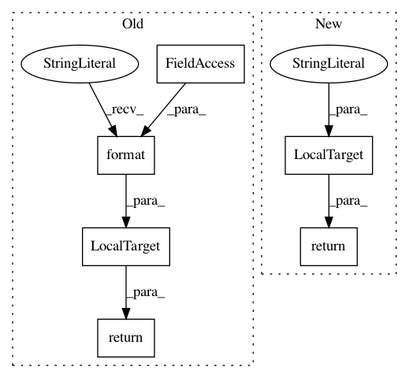

9d50126a19a11d0fa31359b4a489af9ef567e8be,qanta/pipeline/__init__.py,Reports,output,#Reports#,47
Before Change
yield Summary(fold=self.fold, weight=self.weight)
def output(self):
return LocalTarget("output/reporting/report.{}.pdf".format(self.weight))
def run(self):
shell("pdftk output/reporting/*.pdf cat output /tmp/report.{}.pdf".format(self.weight))
shell("mv /tmp/report.{0}.pdf output/reporting/report.{0}.pdf".format(self.weight))
After Change
yield Summary(fold=self.fold)
def output(self):
return LocalTarget("output/reporting/report.pdf")
def run(self):
shell("pdftk output/reporting/*.pdf cat output /tmp/report.pdf")
shell("mv /tmp/report.pdf output/reporting/report.pdf")
In pattern: SUPERPATTERN
Frequency: 3
Non-data size: 6
Instances
Project Name: Pinafore/qb
Commit Name: 9d50126a19a11d0fa31359b4a489af9ef567e8be
Time: 2016-11-30
Author: ski.rodriguez@gmail.com
File Name: qanta/pipeline/__init__.py
Class Name: Reports
Method Name: output
Project Name: Pinafore/qb
Commit Name: c9469fe6f125a2178ccafa904b8afe7ed64a0008
Time: 2016-08-24
Author: ski.rodriguez@gmail.com
File Name: qanta/pipeline/preprocess.py
Class Name: WikifierInput
Method Name: output
Project Name: Pinafore/qb
Commit Name: c9469fe6f125a2178ccafa904b8afe7ed64a0008
Time: 2016-08-24
Author: ski.rodriguez@gmail.com
File Name: qanta/pipeline/preprocess.py
Class Name: WikifierOutput
Method Name: output